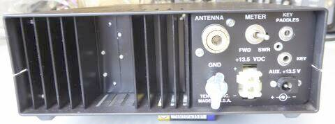
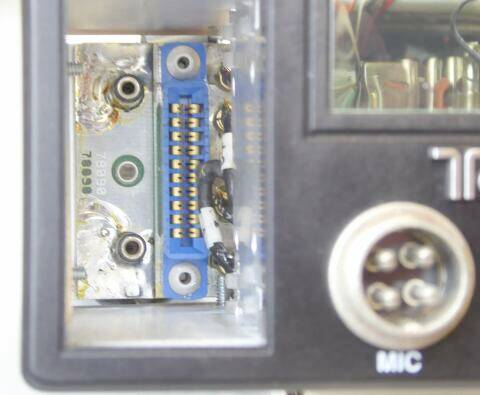
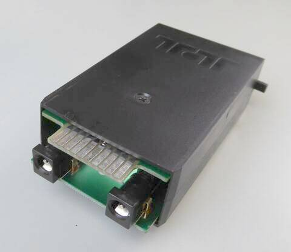
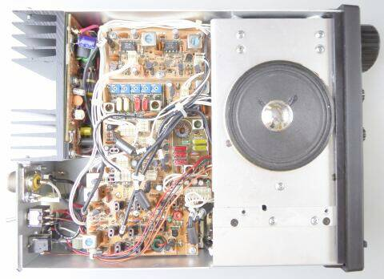
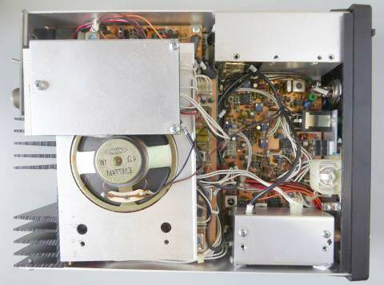
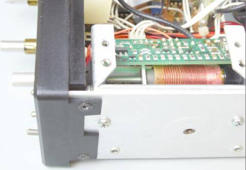
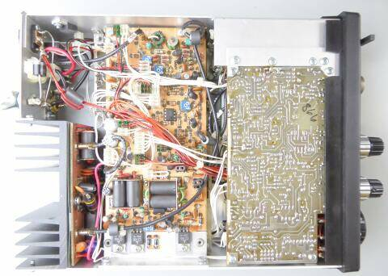

こちらは、１９９３年の新製品
この時期、ＵＳにあってはオンリーワンと言っても良いＴｅｎ-Ｔｅｃの製品です
いわゆるＡｒｇｏｎａｕｔ（ 初代Ａｕｇｏｎａｕｔ５０５）の流れをくんだ製品だと想像します
ＳＣＯＵＴ５５５は、５０Ｗモデルですが、ＳＣＯＵＴ５５６という送信出力５Ｗモデルの用意もあります
対象は、移動など簡易な運用向け、あるいはバックパッカー向けと言う位置付けかと思います
それが故に､小型軽量で必要な機能をコンパクトにまとめ、かつリーズナブルな設計がしてあります
特徴は､バンド切替をプラグインモジュール行っている点
このモジュール内で、２ＭＨｚ台のＰＴＯの信号と､クリスタル・オシレータで､必要なＬｏ信号を得ています
１６０Ｍバンド～１０Ｍバンドまで、ＷＡＲＣバンドを含む９バンドのモジュールの用意があります
ＩＦは、６．１４４ＭＨｚ ＤＢＭを多用した､シングル・コンバージョン方式が採用されています
ＩＦフィルターは、カタログの上では９ポールとなっていますが､実際は帯域幅可変の４ポールフィルタと固定の５ポールフィルタの組み合わせで､合わせて９ポールです
その帯域巾ですが、５００Ｈｚから、２．５ＫＨｚまで連続可変出来ます（ＩＦ ＢＷ）
ＲＩＴの可変は±１ＫＨｚ
ＴＵＮＥは、１５～２０Ｗ程度(本当に､アンテナ調整用！ ファイナルを壊さない範囲に収めてある）
ＳＷＲ計測も出来ます(背面にＳＷあり）
エレキーを内蔵（デフォルトは、２５ＷＰＭ 可変出来ますがバックアップされないので､次の運用時には、設定はデフォルトに戻ります）
とまあ、通常の運用に必要と思われるものは､全て内蔵してあるといった感じです（ノイズ・ブランカはオプション設定）
|

|
 |
リアパネル
２ＰのＣＷキー入力（ＫＥＹ）と、３Ｐのエレキーパドル入力（ＫＥＹ ＰＡＤＯＬＥＳ）の２つがあります
またＳＷＲも切り替えて読めるようにメーター切替がついています |
 |
こちらが、フロントパネル
左端にある、プラグインモジュールの受け側(本体側）です
|
 |
こちらが一番の特徴である､プラグインモジュール部です
各バンドに必要なクリスタル・オシレータとＤＢＭ、必要なフィルタが組み込まれています
基板のプラグインは一般的ですが、あと２つは、なんとＤＣジャックが採用されています
極めてアマチュア・ライクで良いです！
|
 |
本体トップ部
これもＴｅｎ－Ｔｅｃお得意、自社製のクリスタルフィルターが２箇所に見えます
上に見える４ポールのものが帯域可変のものです
真ん中に見える５ポールのもは固定帯域のフィルタです |
 |
本体トップ部／スピーカー取り付け部を起こした状態です
上のシールド部がＰＴＯ部です
こちらもＴｅｎ-Ｔｅｃお得意の可変Ｌタイプで、２．２～２．７ＭＨｚを発振します
スピーカーに一部重なって見えているのは周波数ディスプレイ部
下のシールド部は、プラグインモジュールを受ける部分です
|
 |
ＰＴＯ部
シールドを外してみると、なんとコイルのコア部分を直接メインノブで回す構造です
これほどシンプルなＶＦＯの構造は無いであろうというものです！
こんなＴｅｎ-Ｔｅｃの設計が好きです
もちろん、ギアメカあるいはエンコーダーを使ったもののようにスムーズにダイヤルを回す(周波数を変化させる）ことは出来ませんが、スプレッドダイヤルを知っている世代にとっては、全然どおってことはありません |
 |
本体、ボトム部です
送信出力５Ｗモデルでは、左下のパワーアンプ部が無いと思われます
真ん中の基板で、ＲＦ出力は５Ｗあります
この５０Ｗアンプ・スペースですが、もしかしたらバッテリ収納を意識してあるのかも知れません |
それなりに時間を経過していますので、多少のトラブルはつきものです
周波数表示誤差が、ちょっと気になります
補正用にトリマが用意されているのですが､シールド板からの距離が遠く､一般的なドライバでは届きません(シールド板を外してみて気付きました！）
シールド板に開けてある穴を､ドリルで一回り大きくしました！
これで調整ＯＫに
デジタル表示・・・７セグメントＬＥＤの上の横棒が表示されないことがありました
周波数表示基板のスルーホールを半田し直すことで正常になりました
あとは、基板やシールド板の取り付けビスの増し締め・・・訳の分からない不安定な動作・・・結構この増し締めが功を奏します
余談ですが、Ｔｅｎ-Ｔｅｃの製品は､上手に小型化されているが故、うかつにネジを緩めると､締まらなくなることがあります
そのビスが、部品取り付けのものか、構造物を止めているのか、良く知った上で緩めないと、あとで大分解をしなくていけないことに繋がりかねませんので、ここは要注意です！？ |
|
デジタル表示の不具合
しばらくぶりに通電してみたところ、症状再発・・・チェックした結論は、LEDランプ・ドライバーＩＣに問題が生じているようです
古いもので、例によって中国国内を探して手当てすることに・・・
入荷を待って交換、です |
| 2023.10 |
|
極めてＴｅｎ-Ｔｅｃらしいと思われる製品です
・５／５０Ｗの２種の製品構成
・自社設計のクリスタル・フィルタの採用
・シンプルで安定な、ＰＴＯを採用
・機構のユニークさというか､アマチュア・ライクさというか
・実用的に見ても､必要な機能をコンパクトに搭載
その時代毎の最新技術を駆使した製品作りに加え、こういったユニークというか歴史を繋いでいる製品作りも行われていることで、長くこのマーケットに生き残ってるのがＴｅｎ-Ｔｅｃと言うことかも知れません |
|
|